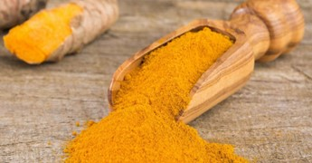

Behind the Seasoning: Curry Powder
Applications
Turmeric (Curcuma longa) is an intriguing ingredient with a rich history as a dietary spice and herbal supplement in ancient China and India. This distinctive yellow-colored spice, derived from the rhizome of the plant (C. longa), is a member of the Zingiberaceae family and is widely cultivated in India and Southeast Asia. The use of turmeric in Asia dates back more than 2000 years where it was used in cooking, medicine, cosmetics, and fabric dyes. Turmeric only gained popularity in European society from the 14th century A.D. Turmeric is arguably one of the most widely used spices throughout the world, as evident from its numerous names as adopted by the locals; i.e. ukon, Indian saffron, kurkum, yellow ginger, and kunyit basah. A rough estimate showed that at least 20 countries use turmeric in basic food preparation daily. The primary active compound responsible for the yellow color named curcumin was identified in the early 1900s. The 'magic touch' of turmeric in curing various ailments due to its broad spectrum of pharmacological activities has been noted since ancient times. The ancient Indian holistic medicine known as Ayurveda uses turmeric for the treatment of common eye infections, burns, acne, wound dressing, sprains, and swelling. In traditional medicine, turmeric is used to enhance the immune system and as a cure for different respiratory diseases such as asthma and for allergy. Turmeric has also been traditionally used for the treatment of diabetes, cough, sinusitis, flu, rheumatism, and liver disorders. Meanwhile, traditional Chinese medicine practitioners regularly use turmeric for treating abdominal pain associated diseases. It has widely been accepted since ancient times that this polyphenol compound possesses anti-inflammatory properties. Advancements in modern medicine have revealed many unknown medicinal properties of turmeric which include antioxidant, antimutagenic, anticancer, antimicrobial, and anti-cardiovascular activities. Studies have also strongly indicated that curcumin, the active compound in turmeric, is the key ingredient responsible for the major therapeutic activities of turmeric.
Curcumin extracted from turmeric is well-suited for indicating pH changes in soil and water samples through its distinct color shifts between acidic and alkaline conditions. As an agricultural application, curcumin allows farmers to efficiently test soil pH.
Its yellow color below pH 6 and red above pH 8 corresponds directly to soil acidity/alkalinity levels. The optimal pH range for plant growth is 6-7.5, where curcumin appears orange. By testing soil patches, farmers can map pH variability across fields to precisely apply amendments only where needed.
This targeted approach saves on lime/sulfur inputs while preventing over-application that could harm soil health. Curcumin also empowers smallholders through low-cost, self-monitoring without advanced equipment. Its vivid hues clearly show results even for those with limited education.
Understanding local soil pH barriers allows farmers to maximize yields through informed nutrient management and irrigation planning. This is especially impactful in developing countries where food security is critical. Curcumin testing can be demonstrated by agricultural experts to build pH awareness.
Curcumin also enables monitoring of surface water quality. As a natural phenolic compound, it changes color between pH 6-8, precisely the range supporting most freshwater ecosystems. Environmental agencies and citizen scientists can sample lakes and streams and detect subtle shifts indicating pollution threats.
Frequent curcumin testing of waterways allows for tracking pH trends over time. This data informs proactive protection strategies before severe ecosystem damage occurs. Its accessibility and non-toxicity make curcumin suitable even for education-focused public involvement in water quality stewardship.
In many developing nations, communities rely on local rivers and lakes for drinking water, fishing, and irrigation. However, without means to test pH, subtle pollution changes can go unnoticed until an environmental or public health crisis emerges.
One such example occurred in rural Bangladesh in the late 1990s. A village downstream from an abandoned mine discovered their main water source had turned acidic, killing all fish and making the water undrinkable. Dozens fell ill from the contaminated drinking water before the issue was identified.
If community members in the area had access to low-cost pH testing using curcumin, the problem could have been caught much earlier before it escalated. Even a few dollars spent on turmeric could have prevented immense hardship.
More broadly, curcumin could empower communities in the developing world to regularly monitor their water sources for any shifts in pH resulting from pollution runoff before it becomes a crisis. Citizen scientists, students, and local leaders could easily collect and test samples.
Seeing curcumin change color would immediately alert them to an issue requiring further investigation and remediation. Problems stemming from deforestation, agrochemical use, or other activities could then be addressed proactively before widespread environmental or health impacts occur.